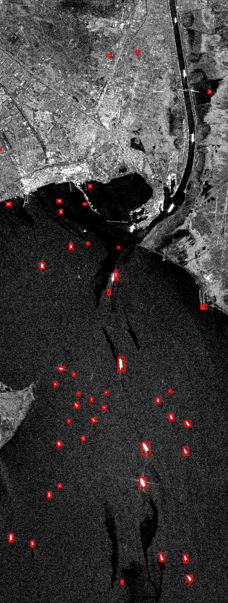
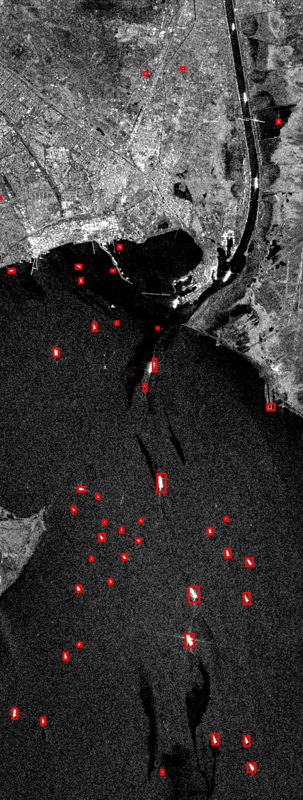
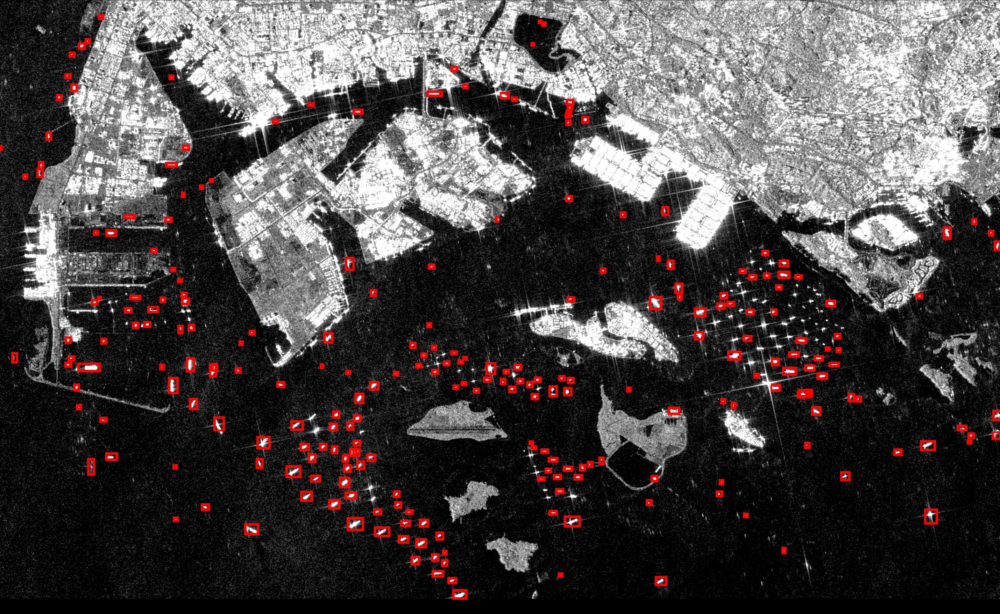

Ship Count: 44; Date: March 20, 2021
A tool to count vessels in any part of the world using open sourced data
By: Alexander Makhratchev and Sean Ng
Satellites are being launched into space at an exponential rate and are able to produce high quality images in relatively short intervals of time on any part of Earth. The amount of data and types of it are also increasing significantly and in this paper we specifically use Synthetic Aperture Radar (SAR) satellite imagery in order to detect ships traveling through bodies of water. We created a ship counting tool that intakes a start date, end date, and an area of interest and returns the number of ships for each day between the two dates. We propose a new method where the images are first classified into offshore or inshore and a separate object detection algorithm counts the number of ships per image. The classifier and object detection networks are trained using the Large-Scale SAR Ship Detection Dataset-v1.0 (LS-SSDD-v1.0) and deployed on Google Earth Engine. We will be using ships and vessels interchangeably throughout the report.


To obtain the count of ships within an image, we have broken our pipeline down into 5 major steps. Our final workflow is as follows:
The data we intend to deploy our model on is the Sentinel-1 SAR image collection on Google Earth
Engine. To access this data, the user inputs the coordinates of the desired area
as well as the start and end dates that the user wants to pull from. The coordinates
can be found on the Google Earth Engine Code editor (Please refer to the GitHub Repo
for more details.) The set of images will then be downloaded locally as .tif files.
Once downloaded, we have to do some additional cleaning of the image values because as you can see below,
the image appears to have a gray tint to it. Fixing this requires clipping images values from -20 to 0
where values less than -20 are set to -20 and values greater than 0 are set to 0. As you can see below,
it creates a much more contrasted and clearer image. From there,
we pad black bars around the image so that when we split the image in the next step, we will get equally sized sub images.
To build our inshore-offshore classifier, we trained on the Large-Scale SAR Ship Detection Dataset-v1.0(LS-SSDD-v1.0) dataset. This dataset
contains 15 large SAR images that are broken down into 9000 sub-images with varying presence of land, sea, and ships. Then to find the best model for classification
we gathered a list of different machine learning models and assessed the average accuracy of each model on the dataset. From
this we found that the K-Nearest Neighbors model performed the best in terms of accuracy out of all the models.
Once we found the best model, we needed to find the best hyperparameters for our model to give us the best performance.
To do this we used a technique called Grid Search Cross Validation which essentially tries out different combinations of parameters in the model
and outputs the best performing set of parameters. In our case, we found that our K-Nearest Neighbors model worked best with 5 neighbors,
kd_tree for the algorithm to compute the neighbors, and with the weights of each datapoint weighted uniformly.
For detecting ships within inshore images we trained deep learning object detection model called Faster R-CNN. As we can see below, inshore images are often more
complicated with the presence of different land features. Due to this fact, detecting ships can be a little harder of a problem because of that we wanted
to use a more robust model that can handle such cases and will allow for more accurate detection of ships when faced with more complex images.
In the opposite case of offshore images, these images are often much less information dense where images feature mostly open ocean and in some cases ships.
Since these images are not as complicated, we decided to use the faster and more lightweight model RetinaNet.
Both of these models were built using the deep learning package Pytorch within Python. However, we ran into some problems where we could only use images
with ships present in them to train the models. This cut down our total dataset size from 9,000 images to 1,900 images. We tried to fix this problem by introducing
image augmentations such as rotations and adding noise to try and increase the size of our dataset, but due to time constraints we were unable to implement these.
However, to solve this issue we instead trained our models for more iterations.
As we can see from the bar graph and table above, the Decision Tree, Random Forest, and K-Nearest Neighbors models all performed quite similarly in terms of average accuracy and runtime. However, in the end we decided to go with the K-Nearest Neighbors model for its slightly better accuracy despite having a slightly slower runtime. This is because within our application, we want to ensure more accurate inshore/offshore predictions so that the images are fed into their correct object detection models.
From the above metrics, we can see that the Faster R-CNN had the highest accuracy scores, but was slowest on inference. Because of this, we decided to go with Faster R-CNN for the more complicated inshore images. For the offshore images, we went with RetinaNet due to the fact that it performs almost as good as well as a little bit faster than Faster R-CNN. However, these speed and accuracy differences are quite small.
We can see from above that our tool performs slightly faster than just using Faster R-CNN for both inshore and offshore, and does about the same performance wise.
This tells us that our tool predicts just as well as Faster R-CNN, and we hope that the small speed increase will translate to scale.
Note: All results from the inshore-offshore classifier and object detection models are derived from the test set of the
Large-Scale SAR Ship Detection Dataset-v1.0(LS-SSDD-v1.0) dataset.
Our goal is for the ship counting tool we have created to be used for other projects such as political policy monitoring, or economic modeling. The modularity of it allows for different parts of the tool to be easily replaced or reconfigured. For example, if a new object detection model is created it can be easily trained and swapped with the current one in the tool. Another example is if a new source of satellite imagery data becomes open source or purchased it can be inputted into the tool instead of Google Earth Engine. Overall, we hope that others continue to build upon this tool or apply it for a beneficial purpose.